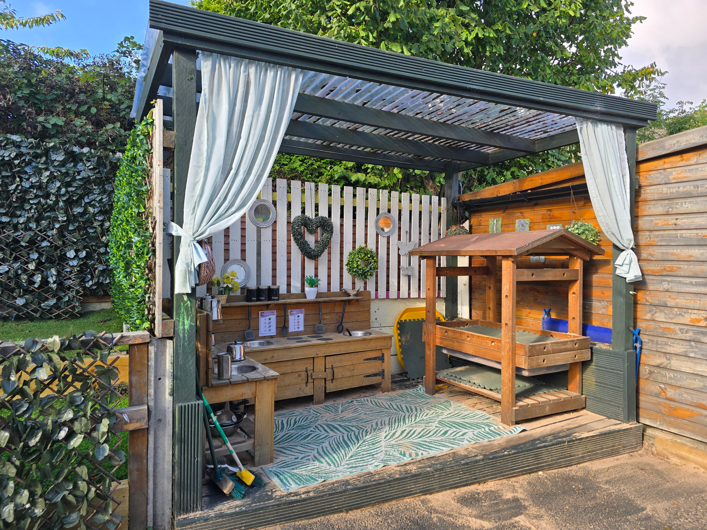
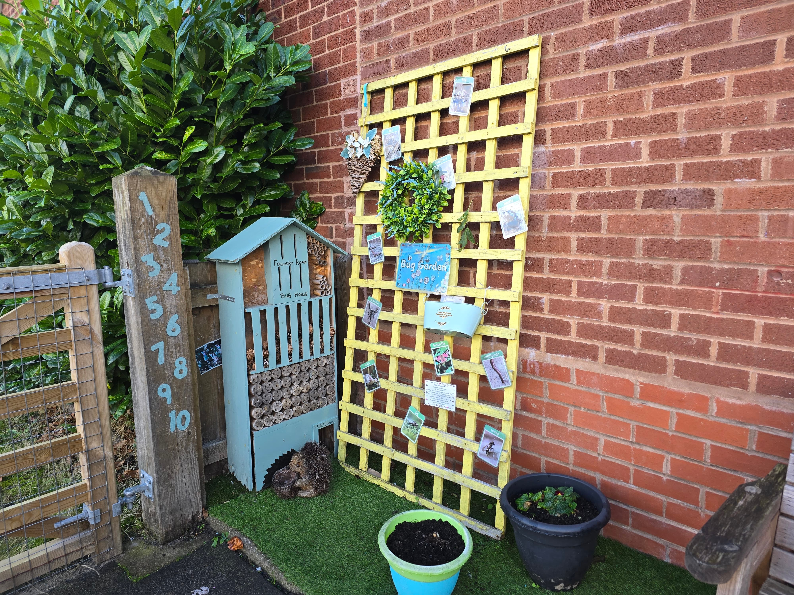
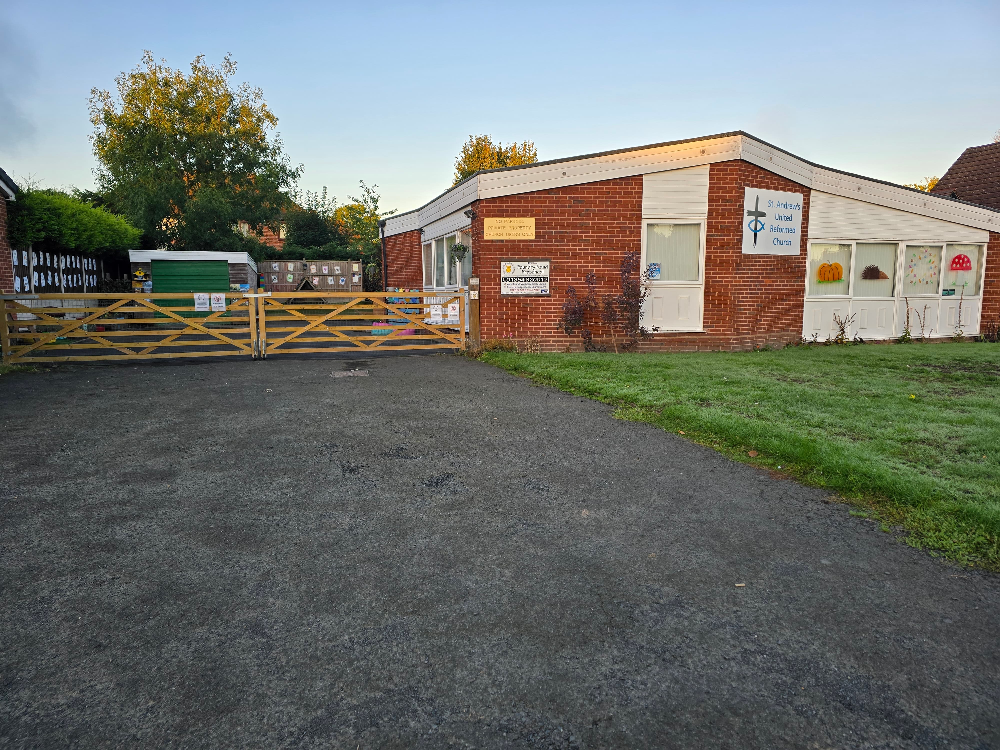

Welcome to
Foundry Road
Pre-School
Who We Are
Foundry Road Pre-school is a safe, warm, caring and stimulating environment in which your child can learn
through play with those of a similar age. We encourage children’s mental, physical and social development
whilst allowing them to grow their independence and self-esteem.
We are Ofsted registered and care for
children between the ages of 2 and 5 years.
All of our staff;
- are dedicated childcare professionals who are loving and caring.
- are DBS checked.
- attend regular training, including Child Protection and First Aid.
All children at Foundry Road pre-school are treated as individuals and genuinely cared for regardless of gender, religion, culture or disability. Children are stimulated by planned activities, which not only include play, but educational elements which prepare them for their next stage in life.



What We Do
We offer a range of exciting activities and equipment that enable each child to play and develop at their own
individual level. Children learn to respect the needs of others, and learn acceptable social behaviour and
manners, i.e. sharing, tidiness, co-operation, self-dressing, toilet training, and responding to daily
routines.
We encourage children to express their own thoughts, questions, predict happenings and to be
confident with their peer groups. Our aim is to provide an environment where you feel totally satisfied and
confident with your child’s care, through a disciplined, yet caring and loving environment. We make learning
fun! During their time at pre-school, your child will develop physically, emotionally, socially and
intellectually. We also offer a range of cultural capital experiences for children.
We aim to create
happy, enthusiastic and inquisitive individuals who are well prepared for their next steps in life. Through
maintaining our good relationships with all local schools, we prepare children for the move to Primary School
and offer transition visits where possible.
At Foundry Road Pre-school, we work in partnership with
parents, carers and children, which encourages mutual respect and a shared understanding.
Where We Are
Pre-school is situated in rooms behind St. Andrew's Church, Foundry Road, Wall Heath. We have two spacious
and well-equipped rooms, a large room for cafe, and a secure outside play area with a spongy floor. We’re also
fortunate to have use of the large church hall, especially when outside play is not possible.
Our premises are secure and safe; we’re totally committed to all mandatory regulations, in particular Health
and Safety. All equipment is appropriate to the children’s age and stages of development and kept in first
class working order.

